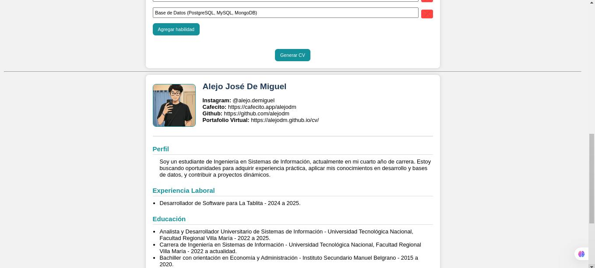
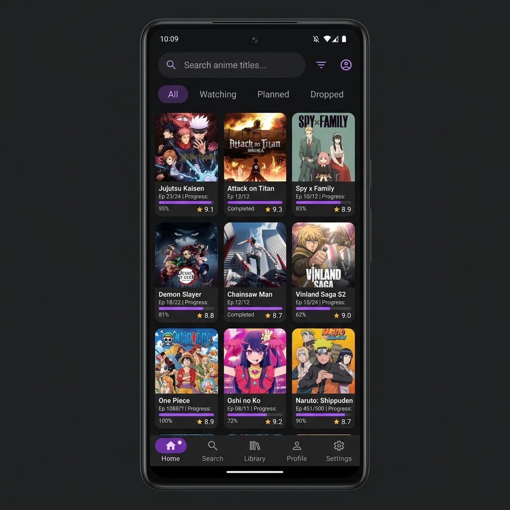

Hola, soy
Alejo De Miguel
Analista y Desarrollador Universitario de Sistemas de Información
Estudiante de Ingeniería en Sistemas de Información — UTN FRVM
- Villa María, Córdoba, Argentina
- 17/09/2002
01. Sobre mí
Actualmente, me encuentro cursando mi quinto año de Ingeniería en Sistemas de Información, donde he desarrollado una sólida base en programación. Mi interés en la programación y mi pasión por la resolución de problemas complejos me han llevado a enfocar mi formación en estas áreas, buscando constantemente oportunidades para aplicar y expandir mis conocimientos.
Estoy motivado por la posibilidad de contribuir en proyectos desafiantes y adquirir experiencia práctica que me permita crecer profesionalmente. Mi objetivo es aprovechar las oportunidades laborales para aplicar mis habilidades, mejorar mi experiencia y continuar aprendiendo.
Poseo habilidades destacadas en adaptabilidad, aprendizaje continuo, organización, gestión del tiempo y razonamiento lógico, que considero fundamentales para enfrentar los retos en el campo de la tecnología y la programación.
Me considero una persona responsable, proactiva, con gran capacidad de aprendizaje y adaptación a los cambios, habilidades que desarrollé a lo largo de mi formación académica y experiencia profesional.
02. Experiencia
Desarrollador
ActualRubén Olivero Servicios Informáticos
Septiembre 2025 — Actualidad
Desarrollo e implementación de funcionalidades utilizando el lenguaje Visual Fox Pro. Diseño de estructuras de bases de datos relacionales, aplicadas a SQL Server y PostgreSQL. Mantenimiento, documentación, actualizaciones y soporte remoto para sistemas de gestión de clientes de múltiples rubros (Contable, Administrativo, Sueldos, A Medida, entre otros).
Conocimientos en la normativa laboral y reglamentación argentina vigente para el cálculo de liquidación de sueldos. Experiencia en la integración y manejo de conexiones con los servicios de ARCA para sistemas de facturación electrónica.
03. Habilidades
Lenguajes
- Python
- Java
- TypeScript
- JavaScript
Web & Mobile
- Angular
- NestJS
- React
- Ionic
- Android Studio
- HTML5
- CSS3
- Django
Bases de Datos
- PostgreSQL
- SQL Server
- MySQL
- MongoDB
- Firebase
Ciberseguridad
- Wireshark
- BurpSuite
Análisis
- Modelado UML
- Modelado BPMN
- Requerimientos
- Análisis de Negocio
- Documentación
Habilidades Blandas
- Aprendizaje Continuo
- Gestión de Tiempo
- Adaptabilidad
- Trabajo en Equipo
- Comunicación
- Resolución de Problemas
04. Proyectos
Algunos de mis desarrollos más recientes.

Curriculum Generator
Una aplicación web que permite generar tu currículum en PDF de forma rápida, gratuita y desde el navegador.

AnimeTrackerPro
Aplicación móvil para seguimiento de anime, consumiendo la Jikan API e integrando Firebase para autenticación y sincronización de datos.

Sistema para Restaurantes
Sistema para la gestión de menús, pedidos, cobros y reportes para restaurantes, realizado durante el cursado del Seminario Integrador.

Juego Separar Sílabas
Juego interactivo diseñado para ayudar a mejorar tus habilidades en la separación de palabras en sílabas.

Usuarios y Productos
Validación de Usuarios y Administración de Productos y Tipos de Productos. Proyecto de Desarrollo de Software.